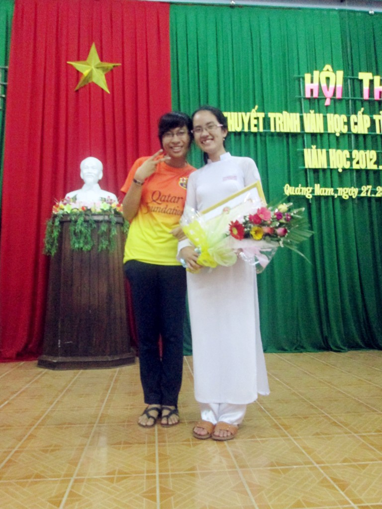
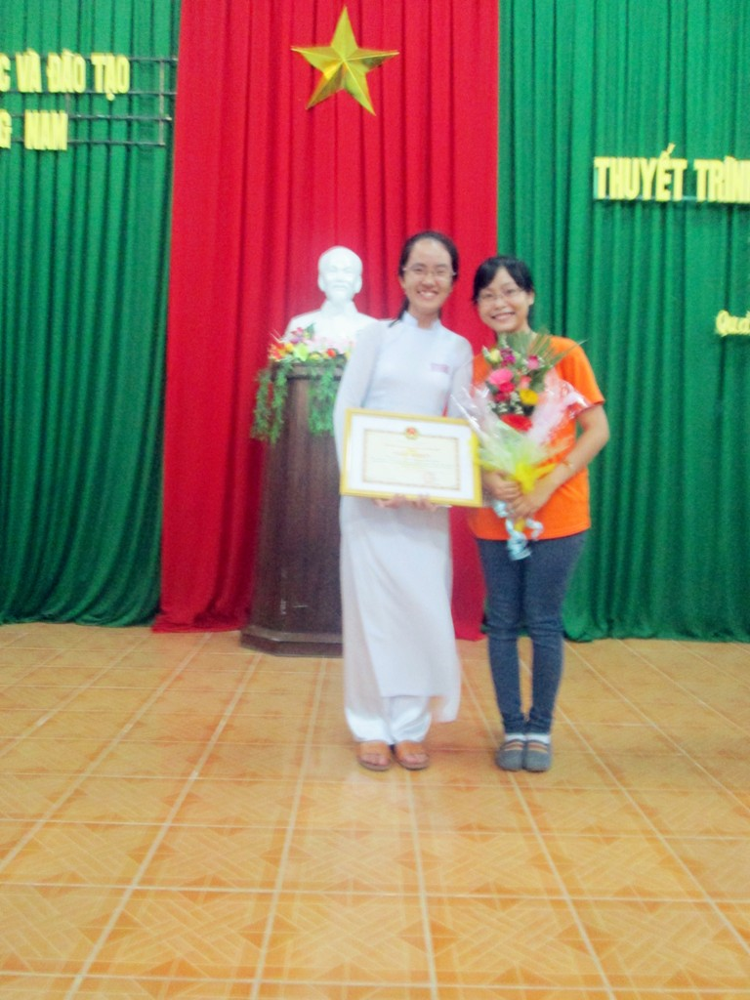

HỌC SINH TRƯỜNG THPT CHUYÊN NGUYỄN BỈNH KHIÊM ĐẠT GIẢI NHẤT CUỘC THI THUYẾT TRÌNH VĂN HỌC CẤP TỈNH

Viết bởi Administrator Thứ hai, 08 Tháng 4 2013 09:06
Cuộc thi Thuyết trình Văn học cấp tỉnh năm học (2012-2013) đã diễn ra trong hai ngày 28/3 và 29/3 tại Hội trường Phòng GD Thành phố Tam Kỳ. Tham gia cuộc thi năm nay có 51 thí sinh đến từ các trường THPT trong tỉnh, được chia thành hai bảng: Bảng A gồm các trường thuộc khu vực đồng bằng và Bảng B gồm các trường khu vực miền núi.
Em Phan Nguyễn Thu Sương, học sinh lớp 12 chuyên Anh đại diện HS của trường THPT Chuyên Nguyễn Bỉnh Khiêm tham gia dự thi với đề tài “Tiếng hát con tàu – Hành trình đi tìm lời giải cho câu hỏi Nghệ sĩ - ta là ai?”. Thu Sương đã chinh phục được Hội thi qua phần thuyết trình đầy tự tin và rất ấn tượng. Đồng thời, Sương cũng đã thể hiện được vốn kiến thức văn học vững vàng cũng như kĩ năng lập luận sắc sảo của mình qua phần trả lời thông minh và lưu loát câu hỏi khá ‘hóc”của Ban giám khảo. Cô học trò nhỏ nhắn này đã kết thúc phần thi của mình bằng một nụ cười rất tươi khi được nhận bó hoa tươi thắm của những người bạn cùng lớp. Sự cổ vũ nhiệt tình của đội ngũ cổ động viên hùng hậu đến từ trường THPT Chuyên Nguyễn Bỉnh Khiêm cũng đã góp phần không nhỏ trong thành công của Thu Sương. Kết quả Hội thi,Thu Sương đã giành Giải Nhất bảng thi các trường thuộc khu vực đồng bằng của tỉnh.
Thành công của Phan Nguyễn Thu Sương trong Hội thi lần này càng làm đầy thêm bảng thành tích của cô học trò chuyên Anh vừa học giỏi, vừa đa tài, vừa nhiệt tình sôi nổi tham gia tất cả các hoạt động phong trào của trường. Kết quả này cũng góp phần làm đầy thêm bảng thành tích mà học sinh của trường đã đạt được qua các cuộc thi cấp tỉnh và khu vực diễn ra trong tháng Ba. Hi vọng sẽ có thêm nhiều thành tích cao hơn nữa trong các kì thi sắp tới để thầy và trò trường THPT chuyên Nguyễn Bỉnh Khiêm thêm niềm vui, càng tự hào và tự tin vững bước xây dựng nhà trường phát triển bền vững và ngày càng lớn mạnh.
*Tin bài: Tổ Ngữ văn
MỘT SỐ HÌNH ẢNH HỘI THI:



- 22/08/2013 09:28 - Giao lưu cho những ngày sau
- 22/08/2013 09:16 - Lộc và những lựa chọn
- 04/07/2013 11:00 - DANH SÁCH TRÚNG TUYỂN VÀO TRƯỜNG THPT CHUYÊN NGUYỄ…
- 14/05/2013 21:24 - CÔNG ĐOÀN TRƯỜNG THPT CHUYÊN NGUYỄN BỈNH KHIÊM TH…
- 25/04/2013 09:13 - TRƯỜNG THPT CHUYÊN NGUYỄN BỈNH KHIÊM ĐẠT THÀNH TÍ…
- 26/03/2013 09:05 - Tân Thạnh: Tổ chức giao hữu bóng đá
- 25/03/2013 10:36 - ĐOÀN TRƯỜNG THPT CHUYÊN NGUYỄN BỈNH KHIÊM TỔ CHỨC …
- 21/03/2013 08:06 - TRƯỜNG THPT CHUYÊN NGUYỄN BỈNH KHIÊM TỔ CHỨC HỘI T…
- 20/03/2013 08:34 - ĐOÀN TRƯỜNG THPT CHUYÊN NGUYỄN BỈNH KHIÊM – QUẢNG …
- 15/03/2013 10:02 - CÔNG ĐOÀN TỔ CHỨC CÁC HOẠT ĐỘNG KỈ NIỆM NGÀY QTPN …